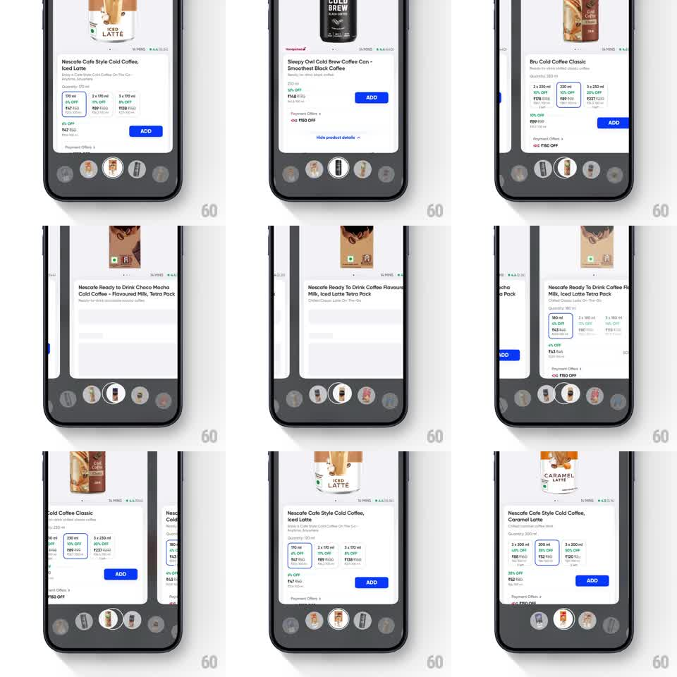

Media
Frame-by-frame

Rebuild this interaction 1:1: Swiggy Instamart's curved bottom wheel - product icons ride a circular arc at the bottom of the screen, swiping rotates the wheel, and the centered icon's product card takes over the page above.

Rebuild this interaction 1:1: Swiggy Instamart's curved bottom wheel - product icons ride a circular arc at the bottom of the screen, swiping rotates the wheel, and the centered icon's product card takes over the page above. ## Integration Integration: stack-agnostic spec - springs given as stiffness/damping, timed motions as duration + curve; map every value to your framework and animation library of choice. ## Scene Instamart product screen, white: product image and details card (Nescafe Iced Latte / Sleepy Owl Cold Brew / Bru Cold Coffee - name, quantity chips, price, ADD button) above a curved bottom bar; the bar is an arc of circular product icons, the center one raised and enlarged in the arc's notch, the rest receding along the curve. ## Motion spec Pattern: curved-wheel bottom navigation driving content swap. - Horizontal swipe anywhere on the wheel rotates icons along the arc 1:1 (icons translate along the curve and scale: center 1.25x, neighbors fall to 0.7x and 60% opacity at the edges). - Release: the wheel snaps the nearest icon to center (spring ~350/18 along the arc) with a small overshoot. - On snap, the centered icon lifts into the notch (translateY -10px, 200ms) and the product card above swaps: current content slides up and fades (200ms) while the new product slides in from below (250ms, 12px rise), image first, details 80ms later. - The ADD button and price crossfade with the card but the button never changes size - stable touch target. ## Calibration - The wheel reads as a physical drum - icons at the edges tilt slightly toward center as if on a cylinder. - Content swap follows the wheel, never leads it: the card changes only after the snap lands. ## Reduced motion Wheel steps one icon per swipe (150ms ease); card crossfades (200ms). ## Don't miss - The notch highlight stays fixed at center - icons move through it, it never travels. - Edge icons are still tappable: tapping an off-center icon rotates it to center with the same snap.